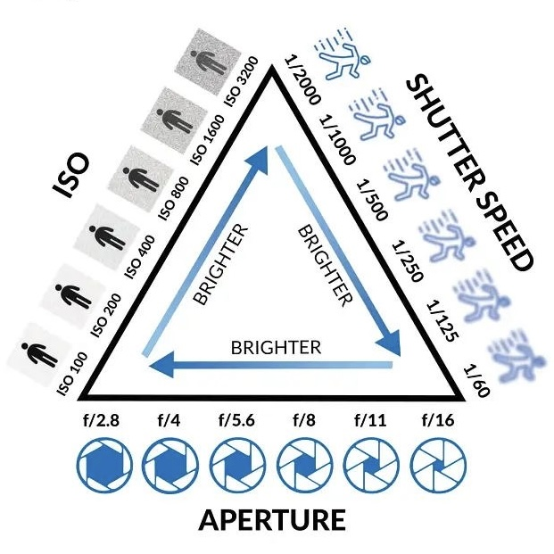

How to Understand Your Camera Settings!
Learning time: 10-20 minutes
Helpfulness rating: 100% awesome
Are you wondering how to customize your camera settings and learn composition? Then this guide is for you! Follow along with my step-by-step guide for easy and fun camera tips and tricks!
-
step 1
-
Camera Settings Cheat Sheet

Aperture, ISO, and Shutter Speed make up the "exposure triangle". This controls the brightness, grainiess, and the blur of your photos.
step 2
-
Aperture
Aperture adjusts the opening and closing of the lens. it directly affects the brightness, depth of fleid, and creates either a blurry background or sharp scenes.
The f- -stop measures the size of the aperture. A small number (e.g. f.1.8) has a wider opening [more light and blurred background]. A large number (f/16) has a narrow opening [less light, everything is in focus].
step3
- step 4
- step 5